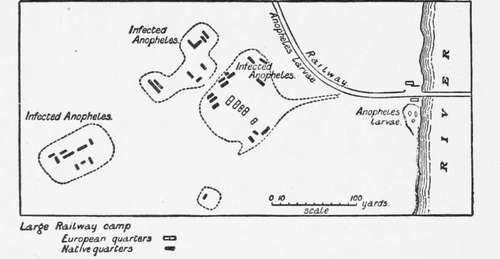
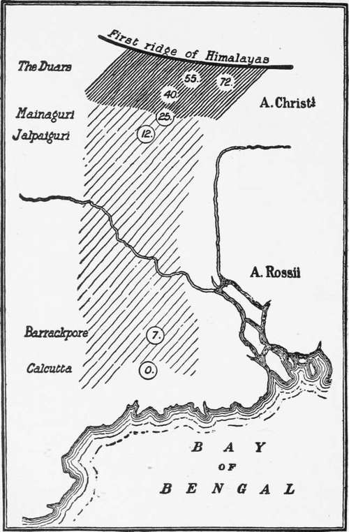

The Relation Of The Anophelin To Malarial Endemicity
Description
This section is from the book "Malaria, Influenza And Dengue", by Julius Mennaberg and O. Leichtenstern. Also available from Amazon: Malaria, influenza and dengue.
The Relation Of The Anophelin To Malarial Endemicity
We have already alluded to the fact that, in spite of ignorant assertions to the contrary, no place where malaria is endemic is known where Anophelince also do not occur. We have pointed out that the converse is not true, viz., that where Anophelinoz exist there also malaria is endemic. In fact, many instances to the contrary are known, and some of these, as we shall see, are difficult of explanation. Thus in England malaria is extinct, though the Anophelince remain especially in the fen district of Norfolk and Cambridge, which was one of the chief endemic foci. We have previously discussed this point. Similar instances are known even in Italy. Thus, according to Celli, Turin was the seat of severe pernicious fevers fifty years ago, while to day there is no trace of them: a fact no doubt due to increased population and the accompanying drainage and structural alterations found in large towns; and at the present day it would appear doubtful if any large modern town could be found which is itself malarial; for the Anophelinae are not found under such conditions; thus while Rome (the classic instance) is itself absolutely devoid of malaria, it is only on reaching the villages of the Campagna that Anophelinae and malaria coexist again, and even in tropical towns and cities we rarely find malaria the scourge that it is in villages, in settlements, in the half savage suburbs. Thus in large cities like Bombay and Calcutta our observations led us to doubt the belief that malaria was contracted in the heart of these, but to the conditions existing in Calcutta especially we shall return later.
Our intention here is to consider more especially the distribution of existing endemic foci and their relation to Anophelines. Now the data for an exact consideration of this important question are very imperfect. We know, for instance, that malaria has decreased or almost disappeared in Holland and Germany, while even in Italy in the north it has likewise been decreasing, though in the south it is as severe as ever. It is probably true that the west coast of Africa, the Kongo, and the equatorial regions of Africa are the foci of the most severe malaria in the world. The explanation is difficult, and we shall find that, even when we endeavor to explain such great variations as occur within a distance of 50 miles or even 10, we cannot do so completely. To return to Italy: it is well known, and has recently been pointed out again by Schaudinn, that malaria is a mild disease with a trifling mortality in northern Italy, while in the south, in Sicily and Sardinia, it is extremely severe. It is true that the climatic conditions are different here, and, no doubt, whatever this implies, that this is the determining cause; but, as we shall see later, similar differences in endemicity can be found without any recognizable difference in climate. However, climate is obviously a factor, for in the United States the area of severe malaria and black water fever is that bounded roughly by the isotherm of 55° F., and the occurrence of malaria in northern Europe is determined by the same factor. How far this also determines the distribution of the Anophelince it is difficult to say-the data are insufficient. Again and again we find statements in the literature of malaria, even at the present day, in which it is assumed that the finding of Anophelince is an adequate explanation of the occurrence of malaria anywhere. Rarely do we find that the only proof, viz., the finding of Anophelince infected with parasites, is forthcoming, for the Anophelince that have been found may, as we shall show, have nothing to do with the occurrence of malaria, and, as we have repeatedly stated, the finding of Anophelince is no proof of the existence of malaria in a place, and this is true also of the tropics. Thus in the outskirts of Calcutta, not in the town itself, we have conditions precisely similar to those found in any village in tropical Africa-numerous native huts, a dense population, innumerable Anophelince, and the necessary breeding places near at hand. In such surroundings we should expect to find malaria rife, but, as a matter of fact, it is completely absent. Before discussing the causes of this remarkable fact we may first consider what means we adopt to determine the extent to which malaria prevails in any particular place. If we capture a number of Anophelince in the dwellings of the native population in the tropics, we find that, as a rule, a considerable number of them are infected; that is to say, contain malarial sporozoites in their salivary glands. What is the source of this infection of the mosquitos ? It is not, as was at first thought, that it is caused by the mosquitos having fed upon isolated cases of "fever" among the population, but it arises from a quite unsuspected source of infection in the native children. The native children are, to all appearances, quite well and not suffering from fever; they run about, attend school, etc., but a microscopic examination reveals the unexpected fact that their blood may contain numerous parasites. It has been urged that this infection of native children was not a new discovery, for it had been found earlier that native children exhibited pigment in their spleen examined postmortem. Though this is so, yet it is quite a different matter to have discovered that practically all the native children apparently healthy, harbor parasites and are capable of infecting mosquitos. This fact, of prime importance in the study of malaria prophylaxis in tropical regions, was announced by Koch, and independently by Christophers and myself in West Africa. It is the native, in fact, that constitutes the great source of infection of Europeans in the tropics, and comparable to this the supposed danger arising from a case of European malaria is a mere drop in the ocean. We say supposed, because it is a peculiar fact that in many cases gametes are absent in the blood of Europeans in the tropics, though they may readily appear on return to temperate climes. Natives, then, are the great source of malarial infection in the tropics. How, then, can we estimate the extent to which malaria prevails among the natives? We have a ready and simple test. If the blood of a number of native children be examined, it will be found that the number of those containing parasites varies according to their age, and that beyond a certain age the percentage of those infected becomes very small. Thus in a village examined by us in West Africa, of the babies, 90 per cent, contained parasites. Children up to eight years, 57 per cent.; up to twelve years, 28 per cent.; over twelve years, rarely infected. For a good practical test the age limit of ten years may be taken, and the parasite rate of the children below this estimated. Of course, as far as possible, children of the same age should be examined when comparisons are made of the malaria in two different localities. The percentage of infected children under ten years of age we have termed the endemic index, and we have in the different values of this for different localities an accurate test of the extent to which malaria prevails, or, in other words, of the malarial endemicity, as we termed it. To return, now, to the conditions we found in the outskirts of Calcutta. Under the conditions we have described above we expected to find a high endemic index among the native children, but to our great astonishment it was nil. Some hundreds of children were examined in the outlying villages, but uniformly with the same result; we never found one containing parasites, though examinations were made in different districts, and during the months believed by all to be those of severest fever. Now, the native dwellings in these districts contained thousands of Anophelince, and they could be found breeding in astonishing numbers everywhere. We further dissected over 300 Anophelince captured in these huts, but likewise none of them were infected with sporozoites. The suspicion consequently arose that possibly these particular Anophelince did not transmit malaria, and certain investigations that were subsequently made confirmed our view. Now in Calcutta, the predominant species was Myzomyia rossii, and although, as we shall see, it is unsafe to assume that the anopheline most easily found is the carrier of malaria , yet careful personal search convinced us that this was the species always present, and often only this. At any rate, it was certain that here there was no malaria to transmit, for the children were all free from it. This, then, was the unexpected condition in Calcutta, viz., an edemic index of 0. We then travelled up country some hundreds of miles from Calcutta and proceeded to examine in the same way the native children.
Fig. 9.-Showing how Europeans are Infected with Malaria from the Native Children (from Stephens and Christophers' " Practical Study of Malaria").
Fig. 10.-Showing Variations in Malarial Endemicity (from Stephens and Christophers' "Practical Study of Malaria").
Continue to:
- prev: Habits Of Anopheline
- Table of Contents
- next: The Relation Of The Anophelin To Malarial Endemicity. Part 2
Tags
mosquito, malaria, influenza, dengue, symptoms, outbreaks, diseases, hemoglobinuria, infections